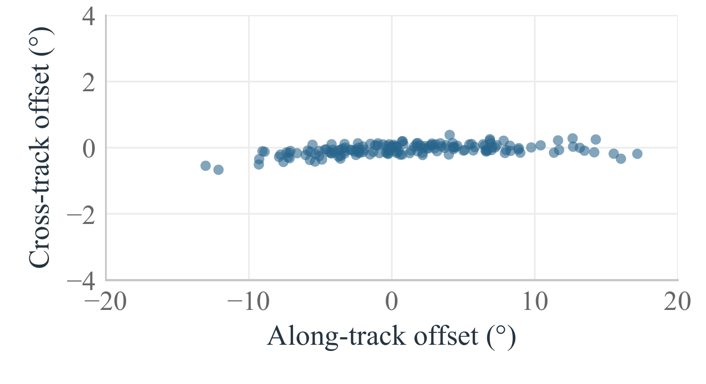
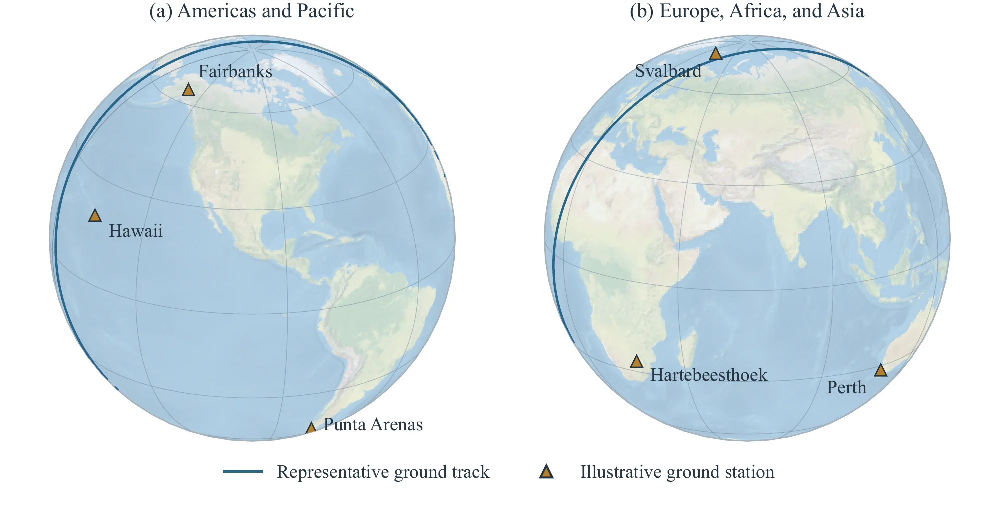
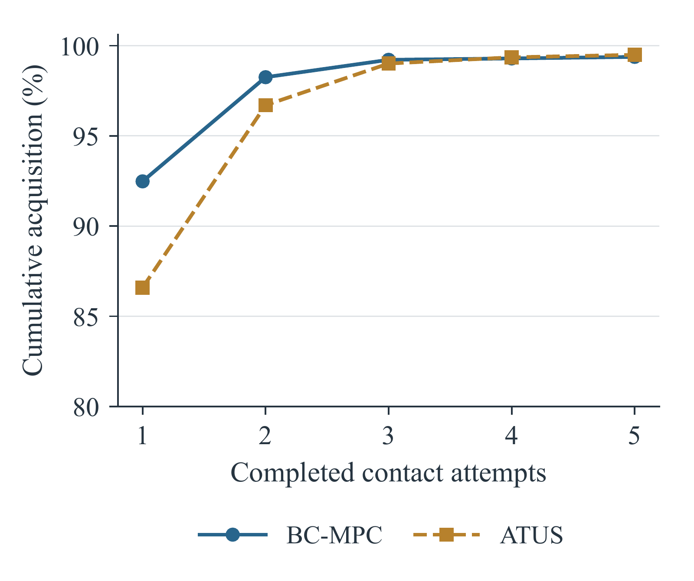
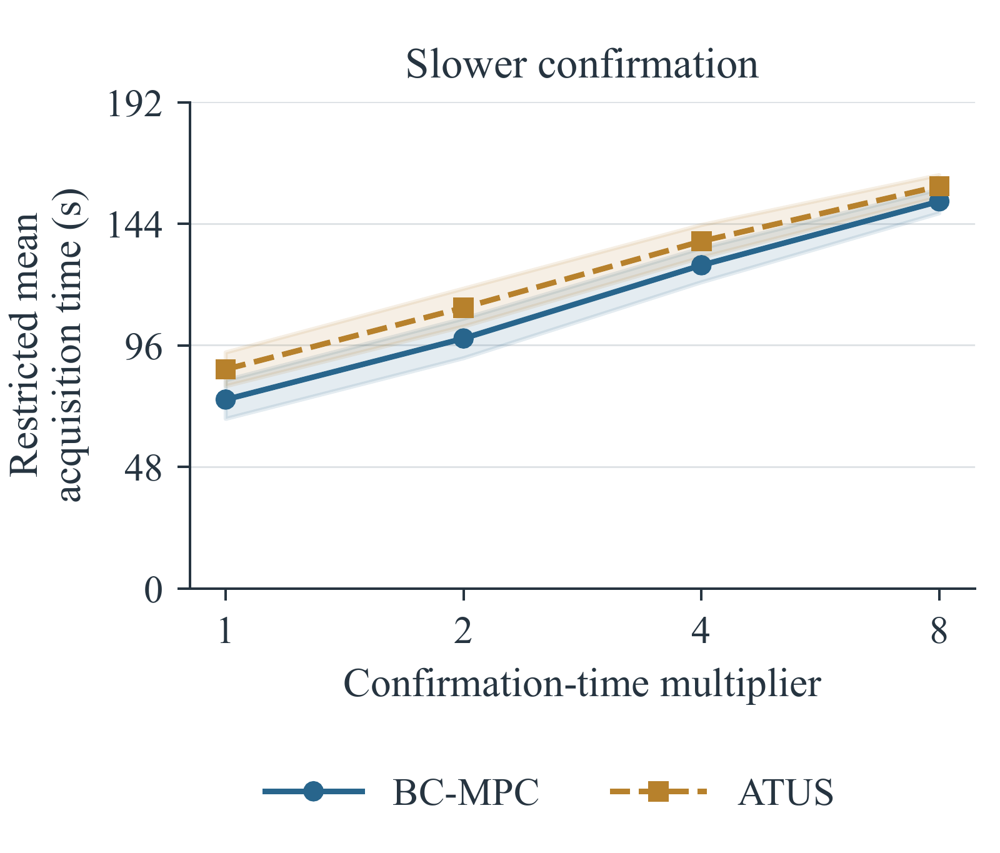
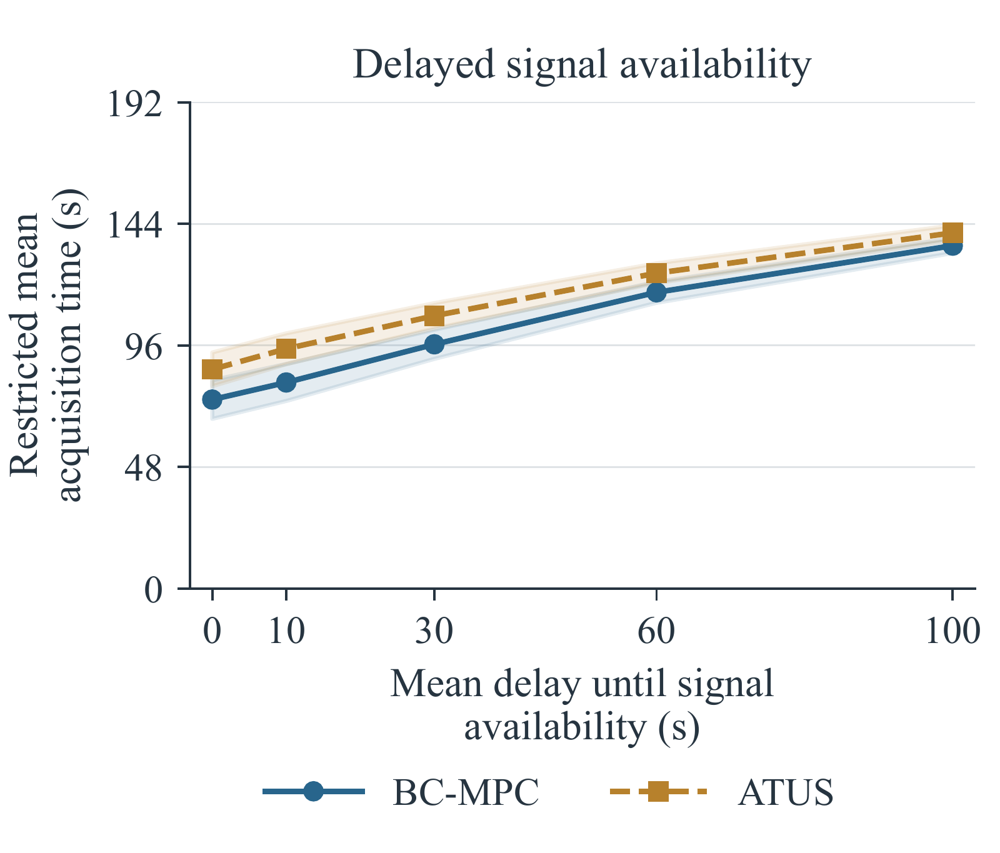
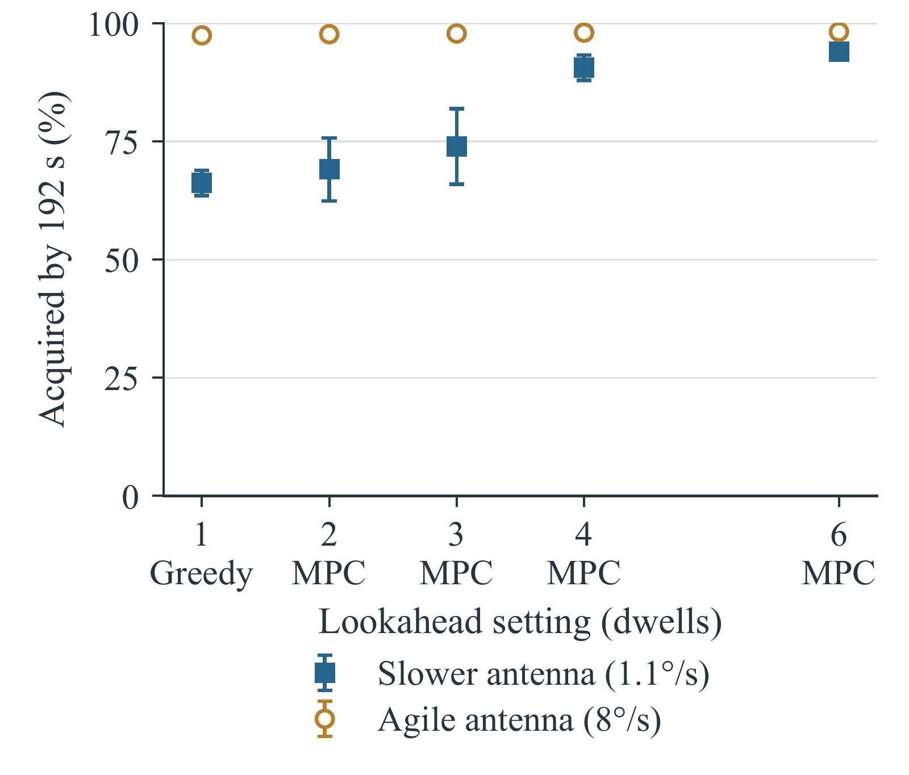

Optimal Search for Finding Satellites
Post-Launch
1 Stanford University2 Kayhan Space
1 Launch / Release

Deployment into the target orbit.
2 Post-release uncertainty

Post-release state uncertainty from injection errors and perturbations.
3 Ground-based acquisition

Search actions choose where to point; the antenna slews, settles, and listens.
Abstract
This paper introduces Bayesian Continuation Model Predictive Control (BC-MPC), an adaptive method that replans near-term antenna pointings while continuing a feasible baseline sweep, for finding and establishing contact with spacecraft immediately after launch when their true positions are most uncertain. After separation, launch and deployment errors can leave the spacecraft sufficiently far from its predicted position that operators must actively search for it during ground contacts to establish communications. Each missed detection provides information about which orbital hypotheses remain plausible, but searching one part of the uncertainty region can consume the time needed to reach another. BC-MPC updates a particle-based orbital belief after missed detections and replans antenna pointing guidance while retaining feasibility. Its continuation helps preserve future search coverage that greedy and short-horizon methods can sacrifice for immediate acquisition gains. We compare BC-MPC against the operationally prevalent along-track sweep and additional search algorithms under common search-time budgets, initial uncertainty, and antenna constraints. Across 96 simulated deployments with matched uncertainty, BC-MPC improves acquisition probability over the along-track sweep and reduces restricted mean acquisition time. We additionally evaluate the method using pre-launch, post-launch, and initial acquisition ephemerides for 83 spacecraft from the Transporter-16 rideshare launch. Using either pre-deployment or post-deployment two-line element sets (TLEs) for planning, BC-MPC improves modeled acquisition probability over the along-track sweep by approximately 12 percentage points under the commonly assumed uncertainty model.
The problem
Launch and early-orbit operations are among the most challenging phases of a spacecraft mission. After launch, the spacecraft may have experienced a fault and operators must establish contact using ground-based antennas to assess spacecraft health and transition toward routine communications despite not knowing its exact position. To make contact with spacecraft, operators rely on pre-launch orbit parameter messages (OPMs) from the launch vehicle provider, which contain the expected deployment state and inform the antenna pointing search strategy. The challenge of this search is exacerbated by uncertainty introduced by launch-vehicle injection errors, ejection-induced dispersion, and orbital perturbations, in particular drag. The resulting uncertainty can exceed the antenna beamwidth, requiring operators to search around the predicted spacecraft location rather than track a single nominal trajectory.
This search must be performed under tight operational constraints. Ground contacts are limited, and an antenna can search only one location at a time. The challenge is particularly acute for rideshare launches, when many spacecraft may require acquisition over overlapping passes. Search decisions must therefore use the available ground contact pass time efficiently while respecting antenna slew, settling, and communication timing constraints.
Adapting the search involves two important considerations. First, each unsuccessful observation provides information. If the antenna points at a location where a particular orbit hypothesis should have produced a detection, a miss reduces the plausibility of that hypothesis. Second, antenna motion limits which locations remain reachable later in the contact. Moving toward one part of the uncertainty region can consume the time needed to reach another. An adaptive search strategy must therefore use information from missed detections without sacrificing coverage of the remaining uncertainty.
Bayesian Continuation MPC
Operational search strategies
The most direct approach is nominal tracking, which commands the pointing direction predicted by the nominal spacecraft state. When the orbit prediction is sufficiently accurate, nominal tracking can acquire the spacecraft quickly without requiring an explicit search. Nominal tracking is not robust to any errors or uncertainty in the initial position. Therefore a slightly more advanced search strategy is a grid sweep. A uniform grid sweep searches a fixed region around the predicted spacecraft position in both the along-track and cross-track directions, without exploiting the structure of the orbital uncertainty. While this provides broader coverage than nominal tracking, operators may spend substantial time searching locations where the spacecraft is unlikely to be.
A better operational approach is an Along-Track Uncertainty Sweep (ATUS). Because post-deployment orbital uncertainty is typically elongated along the direction of motion, ATUS concentrates the search along this dominant uncertainty direction. We define the ATUS policy used here as a fixed, repeating sweep of the propagated prior, subject to antenna motion limits. The candidate directions move with the predicted trajectory. At each step, the antenna selects the reachable candidate closest to the preferred pointing, or makes a partial slew toward it if none is reachable. The sweep advances one index per step; missed detections do not alter its order.

Lastly, a Bayesian greedy strategy instead uses the updated orbital belief after a given position is considered a miss and points the antenna toward the feasible location with the highest immediate probability of acquisition. This makes the search adaptive, but considers only the next pointing and does not account for how that decision affects later search opportunities.
Bayesian Continuation MPC
Looking beyond a single pointing leads naturally to model predictive control (MPC). Rather than selecting only the next action, MPC optimizes a sequence of H upcoming antenna pointings using the current orbital belief. Only the first pointing is executed before the optimization is repeated.
A short planning horizon may cover only part of the remaining contact window, leaving later search opportunities outside the current optimization. BC-MPC addresses this limitation by retaining an ATUS continuation beyond the MPC horizon. Starting from an ATUS schedule, BC-MPC reoptimizes the next H antenna pointings while keeping the remainder of the sweep unchanged. The revised pointings are therefore evaluated together with the retained continuation over the full remaining contact window. This construction is closely related to rollout methods in approximate dynamic programming and MPC with terminal costs and policies, which account for downstream performance beyond the optimized horizon. In BC-MPC, the retained, motion-feasible search schedule provides this continuation, evaluated under the current Bayesian belief.
Suppose K search stages remain, with 1 ≤ H ≤ K. For each candidate prefix of H pointings, a complete schedule is formed by retaining the fixed continuation. BC-MPC optimizes only the prefix, but evaluates the probability of missing the spacecraft over all K remaining stages. The complete schedule must satisfy the antenna motion constraints, including the transition from the optimized prefix to the retained continuation. Only the first action is executed. If the spacecraft is acquired, the search terminates. After a miss, the particle weights are updated using Bayes’ rule, the optimized schedule is shifted by one stage and retained as the next continuation, and the optimization is repeated using the updated belief.
Evaluation
To evaluate BC-MPC, we focus on two main areas. First, we study the controller’s effect on single-spacecraft acquisition, including sensitivity to antenna performance, orbital uncertainty, and receiver behavior. Second, we evaluate how contact-level search improvements translate to fleet acquisition across repeated contact opportunities. Finally, we evaluate BC-MPC through an operational-data replay using operational orbit data from 83 spacecraft from the Transporter-16 rideshare launch provided by Kayhan Space.
Performance is evaluated using acquisition probability and restricted mean acquisition time (RMST). Acquisition probability is the probability that confirmation occurs within the allocated search window. Acquisition time is capped before averaging: successful searches contribute their time to confirmation, and searches without confirmation within the window contribute the full duration.

The primary evaluation uses six illustrative ground stations: Svalbard, Fairbanks, Hawaii, Hartebeesthoek, and Punta Arenas from KSAT’s network, plus Perth, Australia. We use approximate coordinates and one independently steerable antenna per station. Orbits are propagated with Brahe astrodynamics library and SGP4. For the primary evaluation and Transporter-16 replay, equally weighted particles are initialized by independent Gaussian perturbations about the nominal orbit, with assumed standard deviations of 20 s in orbital phase, 0.025° in inclination, 0.035° in right ascension of the ascending node, and 2.5 × 10−4 revolutions per day in mean motion.
| Parameter | Setting |
|---|---|
| Search window | 192 s |
| Move / settle / listen per stage | 4.0 s / 0.5 s / 1.5 s |
| Planning / evaluation particles | 160 / 640 |
| Candidate pointings / extent | 17 / ±2.8 along-track SD |
| MPC horizon / beam width | 4 stages / 40 |
| Antenna rate / acceleration | 1.10°/s / 1.00°/s² |
| Beam FWHM / elevation mask | 2° / 10° |
Results
Single-spacecraft search
We evaluate first-contact acquisition across 2,773 attempts from 96 realizations of a spacecraft deployment near an orbit with an altitude of 550 km and an inclination of 97.6°, with spacecraft elements varied across deployments to produce different acquisition geometries. BC-MPC is initialized from an ATUS schedule with a planning horizon of H = 4 dwells and compared against a uniform grid sweep, ATUS, a Bayesian greedy controller, and an MPC without its continuation term.
| Controller | P60 | P192 | RMST (s) |
|---|---|---|---|
| Uniform grid | 0.248 | 0.329 | 141.9 |
| ATUS | 0.376 | 0.833 | 89.8 |
| Bayesian greedy | 0.565 | 0.688 | 86.5 |
| MPC, no continuation | 0.614 | 0.790 | 74.5 |
| BC-MPC | 0.423 | 0.902 | 78.3 |
P60 and P192 are acquisition probabilities by 60 s and 192 s of elapsed search time.
Over the full contact window of 192 s, BC-MPC achieves the highest acquisition probability of 0.902, compared with 0.833 for ATUS, corresponding to an improvement of 6.9 percentage points (95% confidence interval 6.7–7.0). BC-MPC also reduces RMST from 89.8 s for ATUS to 78.3 s, a reduction of 11.5 s (95% interval 11.4–11.7).
An interesting finding is that strategies with higher acquisition probability early in the search can have lower acquisition probability over the full contact window. By 60 s of elapsed search time, Bayesian greedy and MPC without continuation both achieve higher cumulative acquisition probabilities than BC-MPC. However, by the end of the 192 s search window, BC-MPC achieves the highest acquisition probability among the displayed controllers. This tradeoff highlights the value of retaining effective search opportunities for later in the contact when early pointings do not yield a detection.

Repeated contacts
If the search is unsuccessful over an entire contact window, the unsuccessful observations provide useful information about the spacecraft trajectory. Subsequent contacts therefore begin with a more informed belief, allowing adaptive search decisions to better exploit the remaining uncertainty. We evaluate how this accumulated information affects acquisition over repeated contact opportunities across 16 spacecraft scenarios by comparing cumulative acquisition for BC-MPC and ATUS. BC-MPC acquires more spacecraft during the earliest contacts, while the difference narrows as additional opportunities become available.

Slower and delayed receiver responses
We next evaluate how slower or delayed satellite responses affect acquisition performance, as might occur when spacecraft tumbling affects antenna gain. First, we increase the time required for acquisition confirmation while keeping the controller search plans unchanged. RMST increases for both BC-MPC and ATUS as confirmation becomes slower, while BC-MPC consistently maintains a lower RMST than ATUS across the tested confirmation-time multipliers.
The timing advantage also persists when signal availability is delayed, and not available until some time into the contact window, as might occur with a miscalibrated horizon mask or a software configuration issue. As the mean delay increases, RMST increases for both controllers, while the advantage of BC-MPC over ATUS gradually narrows as signal availability increasingly limits acquisition. For a positive mean delay, every target starts unavailable and becomes available after an exponentially distributed wait. Even at a 100 s mean signal-availability delay, BC-MPC retains an average RMST saving of 5.1 s.


Antenna motion and planning horizon
Finally, we examine how antenna motion and MPC planning horizon affect acquisition performance. We first vary antenna agility in a supporting study, comparing ATUS, Bayesian greedy, and BC-MPC under constrained and agile antenna dynamics across eight scenarios.
| Controller | Slower antenna (1.1°/s) | Agile antenna (8°/s) |
|---|---|---|
| ATUS | 76.1 [73.2, 79.0] | 82.7 [80.3, 85.2] |
| Bayesian greedy | 66.2 [63.5, 68.9] | 97.4 [97.0, 97.8] |
| BC-MPC | 90.9 [88.6, 93.1] | 97.9 [97.5, 98.2] |
BC-MPC provides a substantially larger advantage over Bayesian greedy when antenna motion is constrained to 1.1°/s. With an agile antenna (8°/s maximum speed), however, Bayesian greedy approaches the performance of BC-MPC. In this regime, rapid antenna motion keeps most future pointings reachable, so an immediate acquisition decision is less likely to restrict later search opportunities.
We further investigate the effect of greedy versus model predictive control by varying the MPC lookahead horizon. With constrained antenna dynamics, increasing the number of lookahead dwells substantially improves terminal acquisition relative to greedy search. With an agile antenna, performance changes little as the horizon increases, confirming the behavior observed in the table above.

Fleet acquisition after launch
We next investigate whether contact-level improvements translate to improved fleet-scale acquisition. Such deployments release many spacecraft within a short period, creating competing acquisition demands across a limited ground-station network. We consider a fleet of 100 spacecraft all deployed from the same launch and measure the fraction acquired within the first 24 hours after deployment. We vary the number of available ground-station sites to evaluate how BC-MPC and ATUS perform as the number of acquisition opportunities increases.

BC-MPC improves fleet-scale acquisition across the tested ground-station networks. With six sites, the expected fraction of spacecraft acquired within 24 hours increases from 89.5% with ATUS to 94.2% with BC-MPC. The advantage is largest when ground-station opportunities are limited, where a missed acquisition is more difficult to recover from. As the network expands, additional contact opportunities reduce the impact of individual misses, and the performance gap narrows, with both controllers approaching 99% acquisition for the largest tested networks.
Kayhan Space LEOP replay
Finally, we evaluate BC-MPC using operational orbit data supplied by Kayhan Space for 83 objects from the Transporter-16 rideshare launch on March 30, 2026. The dataset contains pre-deployment ephemeris distributed to operators three days before launch, post-deployment ephemeris, and the first cataloged TLE correlated to each deployment. The pre- and post-deployment ephemeris represent the same orbit products used operationally to cue early ground contacts, while the first-catalog TLE is used only retrospectively as an approximate trajectory reference. We evaluate two planning cases, using either the pre- or post-deployment ephemeris as the controller input and retain the same six ground stations and search configuration used in the previous evaluation.
| Controller | Acquisition (%) | RMST (s) |
|---|---|---|
| Planning input: pre-deployment ephemeris | ||
| Nominal tracking | 4.96 | 184.24 |
| ATUS | 69.51 | 144.05 |
| BC-MPC | 81.55 | 139.10 |
| Planning input: post-deployment ephemeris | ||
| Nominal tracking | 6.03 | 182.67 |
| ATUS | 68.78 | 144.42 |
| BC-MPC | 81.24 | 139.16 |
The pre- and post-deployment planning cases yield very similar results, with BC-MPC improving modeled acquisition over ATUS by approximately 12 percentage points in both cases while also reducing RMST. This mirrors the trend observed in the synthetic evaluation and shows that the improvement persists when using operational orbit products.
Conclusion
This paper studies spacecraft acquisition under orbital uncertainty, where missed detections provide information about the spacecraft location while antenna motion constrains which search actions remain reachable. We introduced Bayesian Continuation Model Predictive Control (BC-MPC), which adapts antenna pointings after missed detections. Across 96 simulated deployments, BC-MPC increased acquisition probability from 83.3% to 90.2% and reduced RMST from 89.8 s to 78.3 s relative to ATUS. Repeated-contact and fleet experiments show that these contact-level improvements translate into earlier fleet acquisition, with the advantage narrowing as additional ground-station opportunities become available. In a replay using real pre- and post-deployment ephemeris provided by Kayhan Space for 83 spacecraft from Transporter-16, BC-MPC improved modeled acquisition over ATUS by 12.0 and 12.4 percentage points, respectively, under the commonly assumed uncertainty model, while also reducing RMST. Together, these results show how Bayesian belief updates and future antenna reachability can be combined to improve early-orbit spacecraft acquisition while retaining the structure of an operational sweep. Future work could validate the approach using GNSS measurements from the vehicle from the time of deployment for greater accuracy, and extend the controller to variable listening times, richer receiver feedback including partial signal strength, and reassignment of reservations after early acquisition.
Explore the solver
LEOPT provides the search solvers and acquisition console. The browser demo includes BC-MPC, the paper’s comparison methods, and two additional baselines. You can edit the sample mission, choose a controller, and step through the search.
The console opens in a separate window. It uses a circular orbit and a reduced search model; the paper’s experiments use SGP4 propagation.
Orbit propagation in the paper is powered by Brahe.
BibTeX
Research manuscript
@unpublished{schreiber2026optimalsearch,
title = {Optimal Search for Finding Satellites Post-Launch},
author = {Schreiber, Carlo and Eddy, Duncan and
Al-Husseini, Mahdi and Woods, Derek and
Feyzi, Araz and Kochenderfer, Mykel J.},
year = {2026},
note = {Research manuscript},
url = {https://satellite-acquisition.github.io/}
}